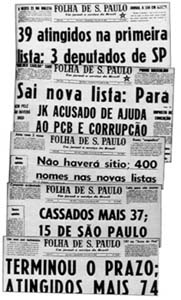

Edição Especial OAB
A ditadura militar
Passados os primeiros meses do golpe, o Conselho Federal começou a vislumbrar a verdadeira face do novo regime, registrando o crescimento do autoritarismo e das arbitrariedades cometidas pelos militares, que não manifestavam o desejo de abandonar o poder e convocar novas eleições, como era esperado. O primeiro passo dado pela OAB para contrapor-se ao regime ocorreu na sessão de junho de 1964, quando a Ordem decidiu que os advogados com os direitos políticos suspensos pelo governo não estavam impedidos de exercer a profissão. O segundo passo foi concretizado na sessão extraordinária de 15 de outubro, quando os Conselheiros protestaram contra os atentados e perseguições praticadas em prejuízo de advogados. Na reunião, o Conselho condenou, por unanimidade, os agravos sofridos pelo presidente da seccional de Goiás, Rômulo Gonçalves, por requerer o cumprimento do habeas corpus concedido ao advogado José Zacarioti, preso arbitrariamente.
Preocupado com a desestruturação da ordem jurídica, burlada pela decretação dos Atos Institucionais nºs 1 e 2, o Conselho Federal da OAB apresentou sugestões à Constituição de 1967 e exigiu a manutenção do fundamento de legitimidade do conceito de segurança nacional. O Conselheiro Letácio Jansen expressou sua convicção quanto à inutilidade das sugestões em face da rigidez do regime vigente, que aprovou Lei de Segurança Nacional de forte apelo autoritário (Decreto-Lei n.º 314, de 13 de março de 1967). O governo, entretanto, chegou a solicitar auxílio da Ordem por meio de expediente do ministro da Justiça, convidando o presidente da OAB para integrar a comissão destinada a regulamentar a Lei Complementar referente à Justiça Federal, em junho de 1967.

Os primeiros 100 dias do Marechal Castelo Branco na Presidência
Correio da Manhã - Arquivo Nacional/RJ

Notícias de cassação desenfreada dos direitos políticos em 1964
Agência Folha de São Paulo
Notícias de cassação desenfreada dos direitos políticos em 1964
Agência Folha de São Paulo
Em outubro de 1967, o Conselho discutiu os acontecimentos que culminaram com a prisão do ex-presidente da Seção do Paraná, José Rodrigues Vieira Neto, vítima de represálias, durante o exercício da profissão, por parte de autoridade militar. A Ordem enviou ofício aos ministros do Exército e da Justiça, ao Procurador Geral da Justiça Militar, aos Tribunais Superiores e ao Supremo Tribunal Federal, ao Congresso Nacional e ao presidente da República, num gesto de desagravo e de apelo para que fossem resguardados a liberdade profissional da classe e o respeito ao Estatuto dos Advogados.
As manifestações do Conselho Federal contra as violências e arbitrariedades praticadas pelas autoridades militares intensificaram-se no ano de 1968. Na sessão de 25 de junho, o Conselho enviou mensagem ao presidente da República e ao ministro da Justiça, expondo a gravidade dos acontecimentos ocorridos no Rio de Janeiro, quando a polícia investiu contra estudantes na "Passeata dos Cem Mil", realizada dias após o assassinato, a tiros, do estudante secundarista Edson Luís, na invasão arbitrária do restaurante estudantil "Calabouço". O Conselho, então, empenhou-se de forma decisiva pela instalação, em outubro de 1968, do Conselho de Defesa dos Direitos da Pessoa Humana (CDDPH), aprovado pelo Senado em 1962.

PRESIDENTE ALBERTO BARRETO DE MELO
(1965-1967)
Meses depois, o campus da Universidade de Brasília foi invadido por tropas militares e o jornalista e deputado Márcio Moreira Alves, pronunciou na Câmara dos deputados discurso em protesto contra a invasão. As palavras do deputado foram consideradas ofensivas às Forças Armadas e o governo decidiu puní-lo. Para processar o parlamentar, entretanto, era preciso obter licença da Câmara, que foi negada pela diferença de 216 a 141 votos, em 12 de dezembro de 1968. Reunidos em Recife, na III Conferência Nacional dos Advogados, os membros da Ordem aplaudiram a decisão da Câmara. A sessão de encerramento da Conferência coincidiu com o dia da represália do governo, que editou o Ato Institucional n.º 5.
Comunicação Social - Jornalismo
Legislação e Ética no Jornalismo: Denis Policani
Alunas: Ayla Ueda, Bruna Presmic, Fernanda Ferraz, Karina Martin e Mariana Thomaz